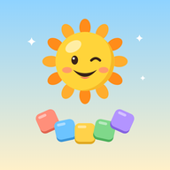

Tagolino
App für Google TV, Tablet und Handy
App herunterladenDanach „Installieren“ wählen. Eine neuere Version installiert sich über die alte, der Plan bleibt erhalten.
Tagolino im Browser öffnen
App für Google TV, Tablet und Handy
App herunterladenDanach „Installieren“ wählen. Eine neuere Version installiert sich über die alte, der Plan bleibt erhalten.
Tagolino im Browser öffnen